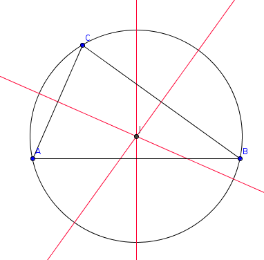

| Choisissez votre langue ! | Choose your language ! |
Soit ABC un triangle.
Faire une figure comportant le triangle ABC et les médiatrices des côtés [AB], [AC] et [BC].
Montrer que ces trois médiatrices sont concourantes.
Quelle propriété a leur point de concours ?
aide
Si un point est équidistant de A et de B d'une part, de A et de C d'autre part, alors il est équidistant de B et de C.
solution

Le point de concours J est centre d'un cercle passant par les 3 sommets (cercle circonscrit).
Let ABC be a triangle.
Make a figure including the triangle ABC and the perpendicular bisectors of the sides [AB], [AC] and [BC].
Show that these three lines are concurrent.
What property has their point of convergence?
hint
If a point is equidistant from A and B on the one hand, from A and C on the other hand, then it is equidistant from B and C as well.
solution
The intersection point J is the center of a circle passing through the 3 vertices (circumcircle).
|
Création Gilles Dubois - licence CC-BY-SA
Created by Gilles Dubois - licence CC-BY-SA
|
Septembre 2023
September 2023
|
Version mobile Jquery
Mobile Jquery version
|
|